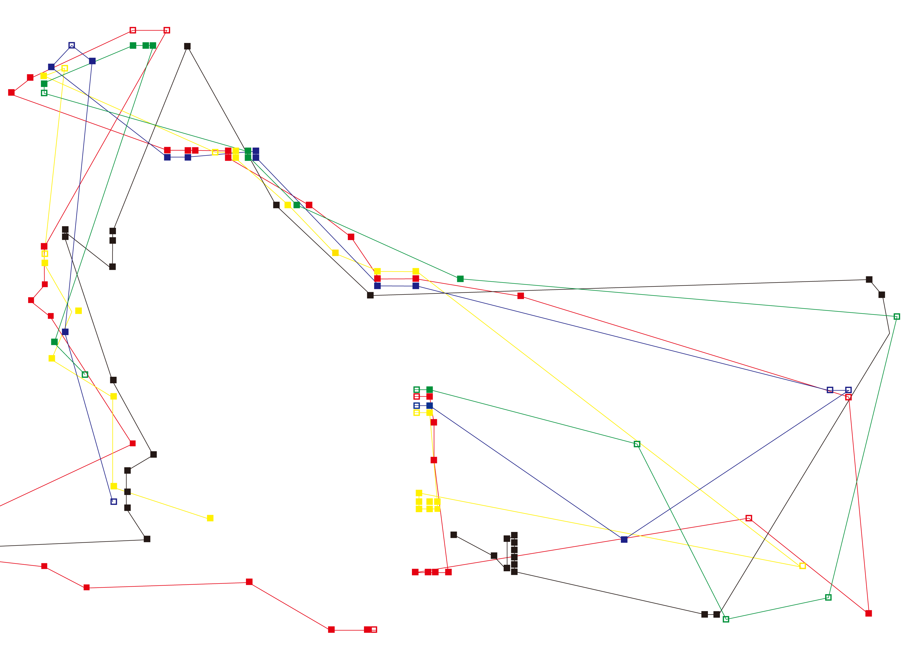
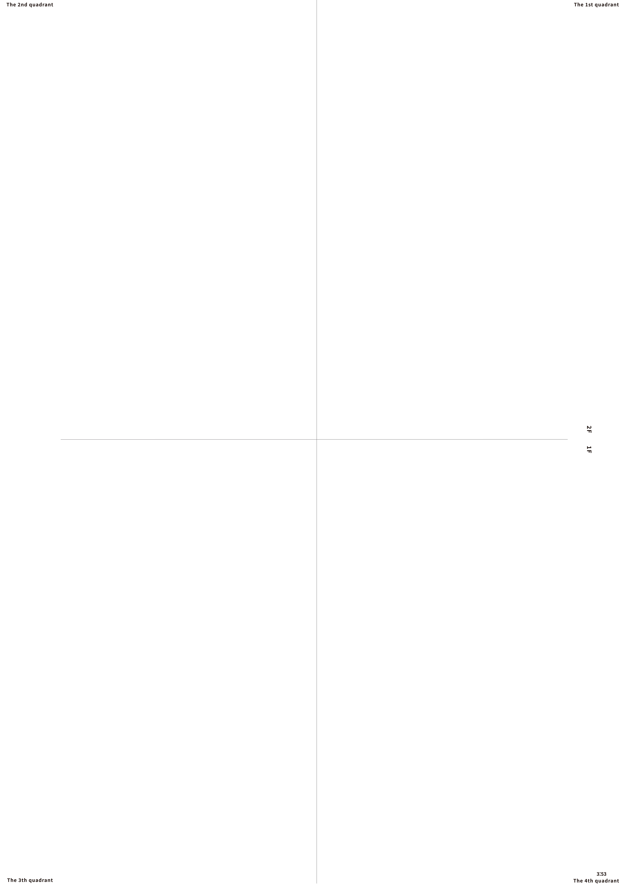
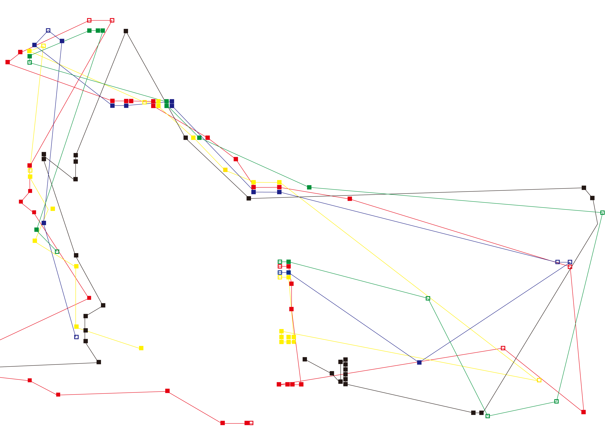
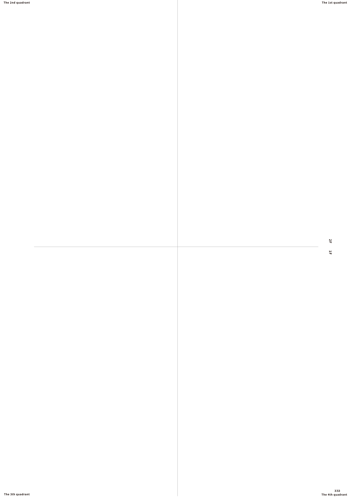

2023
[media translation project]
indigo printing
420 * 594
Ok Go-This Too shall Pass 의 뮤직비디오 영상을 인쇄물로 시각화한 작업입니다.
메인으로 설정하고 집중했던 요소들은 색과 공간 그리고 골드버그 장치입니다.
메인으로 설정하고 집중했던 요소들은 색과 공간 그리고 골드버그 장치입니다.
대지 자체를 공간으로 설정하고 공간 구분을 위하여 X,Y축과
제 1 - 4분면으로 구성하여 공간에서 발생하는 변화들을 시각화하고자 했습니다.
제 2분면을 시작으로 영상에 등장하는 오브젝트는 채운 사각 픽셀, 인물은 비운 사각 픽셀로 구분하고
좌표 위에 찍어둔 위치 정보 값에 멤버들의 색 정보 값을 입혔습니다.
선을 연결하여 영상 동안 각 색깔을 가진 인물 및 오브젝트의 이동 범위를 나타내고
추가적으로 골드버그장치로 진행되는 영상이라는 변수를 살려
트리거 오브젝트,즉 장치들이 시작되게 만드는 사물들을 영상에서 캡쳐하여 각 좌표에 삽입했습니다.
 



(っ˙˘˙)っ used video.:｡
.:｡ coordinates
trigger object
color block